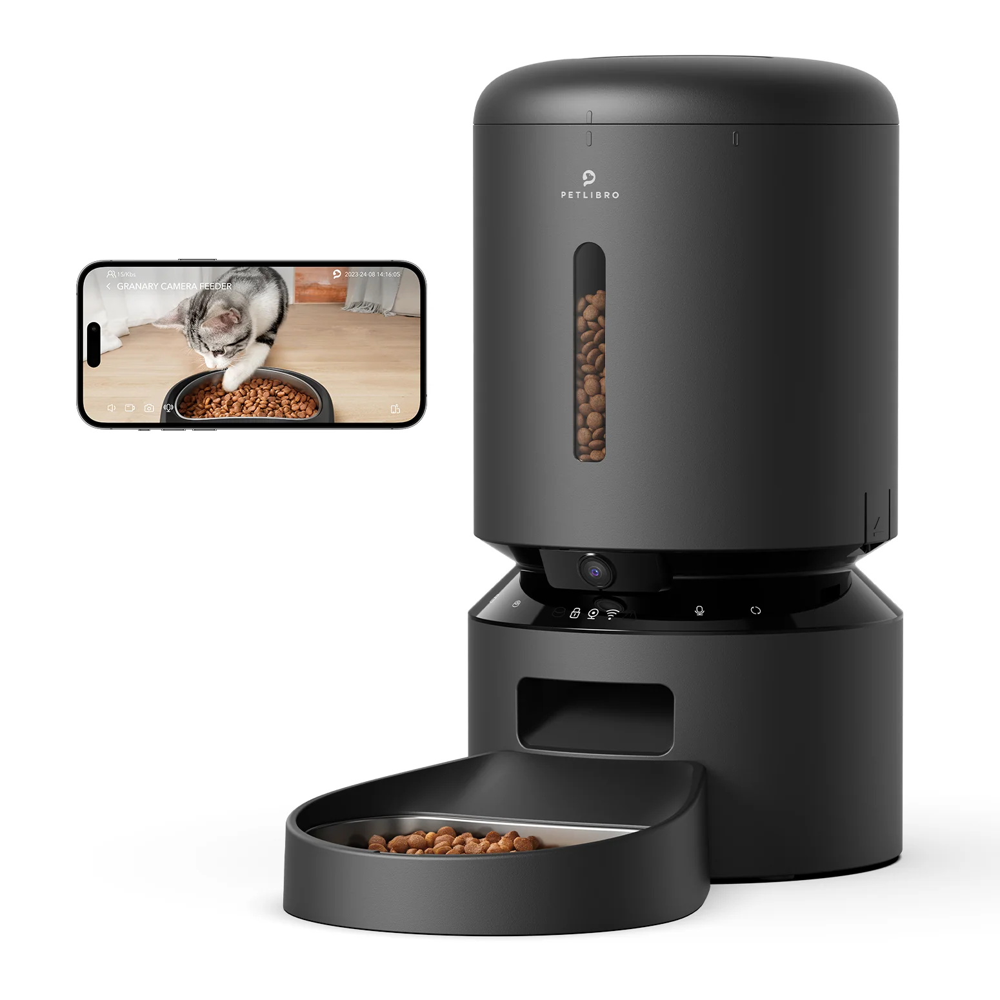
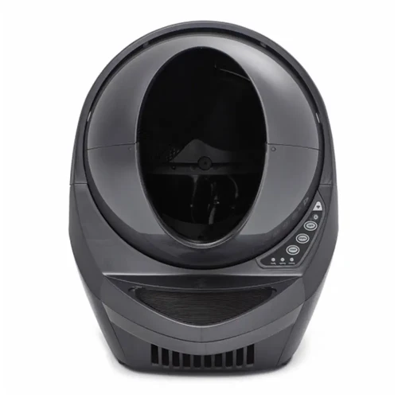

Featured Tech for Cats
Here are some smart feeders and fountains that bring convenience and health-tracking to your cat care.
Feeders & Fountains
| Product | Key Features | Price / Notes |
|---|---|---|
|

Granary Smart Camera Feeder
|
Dual food tray, app monitoring, camera built-in | ~ $149.99 (preorder) :contentReference[oaicite:0]{index=0} |
|
Dockstream 2 Smart Fountain
|
Quad-layer filtration, app monitoring, stainless tray | ~ $76.00 :contentReference[oaicite:1]{index=1} |
Litter-Robot Comparison
| Model | Major Upgrades / Differences | Specs & Notes |
|---|---|---|
|

Litter-Robot 3 Connect
|
Proven model, good for multiple cats, app integration | Uses automatic cleaning, similar sensors, original dimensions :contentReference[oaicite:2]{index=2} |
|
Litter-Robot 4
|
Quieter (QuietSift™), better odor control, weight tracking, improved waste drawer | Entry opening 15.75", sealed drawer, app detailed stats :contentReference[oaicite:3]{index=3} |